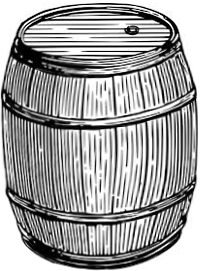
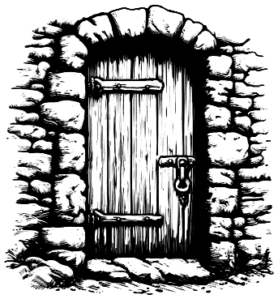
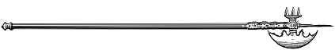
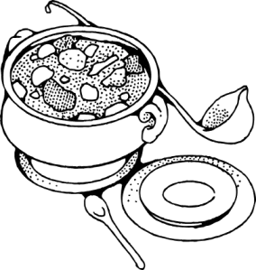
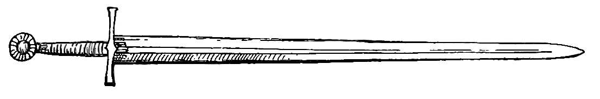

テキスト入力でゲームブックを作成するアプリです。画面左側のテキストエリアにテキストを入力すると、右側にプレビューを表示します。
行頭に「#」マークを書くと、その行を「大見出し」として表示します。特に「#」マークの直後に半角数字を書いて改行した場合、次項で取り上げるリンクの移動先となるパラグラフとして機能します。
また、「#」を複数重ねると中見出しや小見出しに変換します。以下にその例を示します。
半角数字の直後に平仮名の「へ」を記述して改行すると、その番号パラグラフへのリンクに変換します。以下にその例を示します。
行頭に「〉」を記述すると、その行は斜体文字の「引用文」として表示します。
これは引用文の例です
行頭に「-」（ハイフン）を記述すると、その行を「箇条書きリスト」として表示します。
行頭に「_」（アンダーバー）を記述すると、その行を「コード文」として表示します。「コード文」は丸ゴシック体で表示されるため、ゲーム的な処理の説明などを地の文と区別して記述するのに向いています。
これはコード文の例です。行頭に半角のバックスラッシュ（もしくは半角の「￥」）を記述すると、直後の「>」や「-」や「_」を地の文として行頭に記述できます。行頭にバックスラッシュを表記したい場合、二文字連ねたバックスラッシュを記述してください。
例：
〉これらは
- エスケープした
_ 記号の
\ 例です。
字の文や引用文、リストにおいて、文の一部を「**」（二つのアスタリスク）で挟むと、挟まれた箇所が太字で表示されます。
例：これは強調文字の例です。半角のアスタリスク二個で強調したい語句を挟んでください。
段落間の間隔を開けずに「改行」のみを行いたい場合、文中に半角のバックスラッシュ（もしくは半角の「￥」）を記述します。
文中に半角のバックスラッシュを表記したい場合、バックスラッシュを二文字連ねて記述してください。
画面上部の各ボタンの説明です。
テキストエリアの内容を全て削除します。
編集中のテキストを破棄し、選択したテキスト・ファイル(.txt)の内容を読み込みます。
編集中のテキストをブラウザに一時保存します。（すでに保存されたデータがある場合は上書きされます）
ブラウザに保存したデータは長期間使用しないと消去される場合があるため、保存したいデータはテキスト・ファイルとして出力してください（後述）。
編集中のテキストを破棄し、ブラウザに保存されたテキスト読み込みます。
編集中のテキストをテキスト・ファイルとして保存します。（ブラウザで「同名のファイルのダウンロードをスキップ」する設定にしている場合は保存されない場合があるのでご注意ください）
編集中のゲームブックをHTMLファイルとして保存します。ゲームブックに画像を表示したい場合、本ページと同じ場所にある「img」フォルダを保存したHTMLファイルと同じ場所にコピーしてください。
編集中のゲームブックを別タブで開き、印刷ダイアログを表示します。「送信先」や「プリンタ」等の設定で「PDFに保存」や「Print to PDF」などを選択すると、作成したゲームブックをリンクテキストを含んだPDFファイルとして出力できます。
行頭の「$」マークの直後にファイル名を記して改行すると、「img」フォルダの中にある同名のwebp画像を表示します。
（ゲームブックをHTML形式で出力した場合、HTMLファイルと同じ場所にimgフォルダを配置してください）
以下に挿絵の例を示します。





行頭の「$」マークの直後に「（ファイル名）.mp4」を記して改行すると、「img」フォルダの中にある同名のmp4画像を表示します。
例：
また、「$」マークの直後に「（ファイル名）.mp4」の後に任意のテキスト、半角数字、平仮名の「へ」を記して改行すると、リンク先へ移動すると同時に全画面表示で動画を再生するリンクテキストに変換します。
例：
本アプリで作成したデータは制限なく自由に使用することが出来ます。
同梱した挿絵を使用する際は、以下のクレジットをご使用ください。
© 2024 Clark & Company
また、本プログラム自体の改変は「MITライセンス」によって許諾されます。
https://opensource.org/licenses/mit-license.php